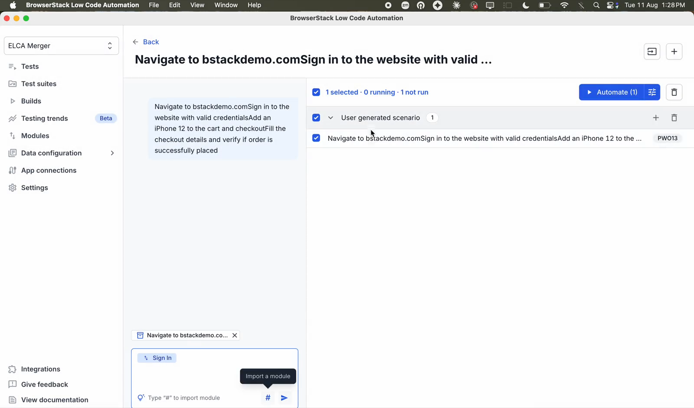
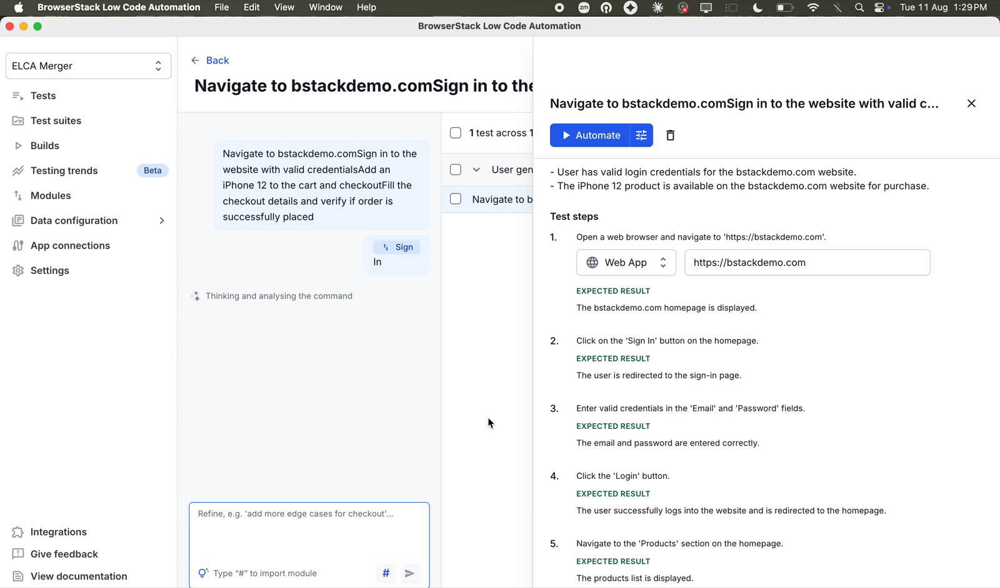
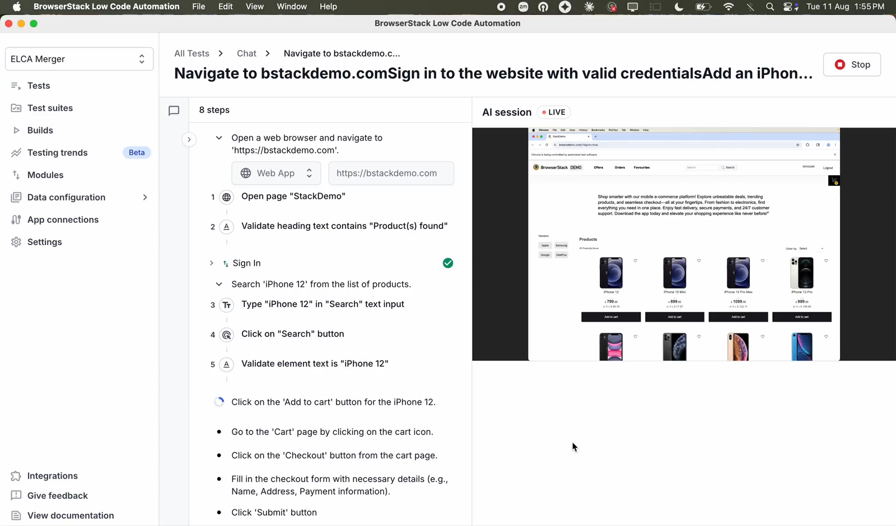
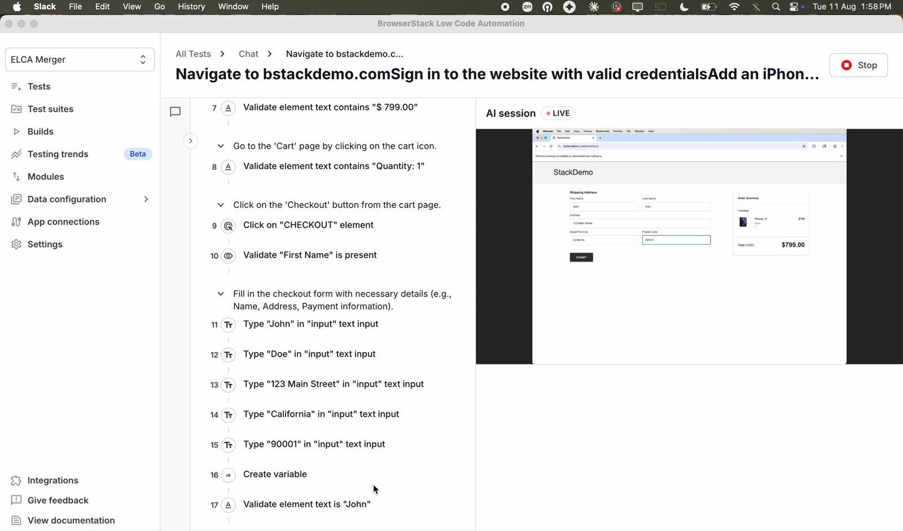
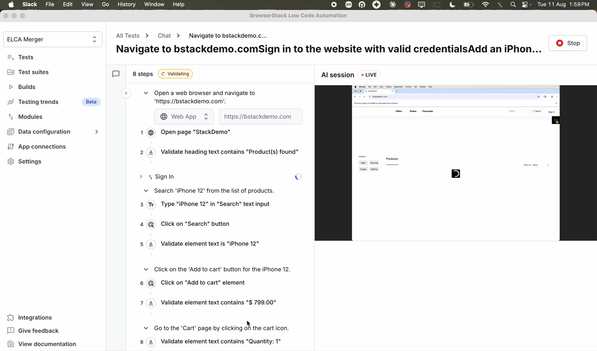
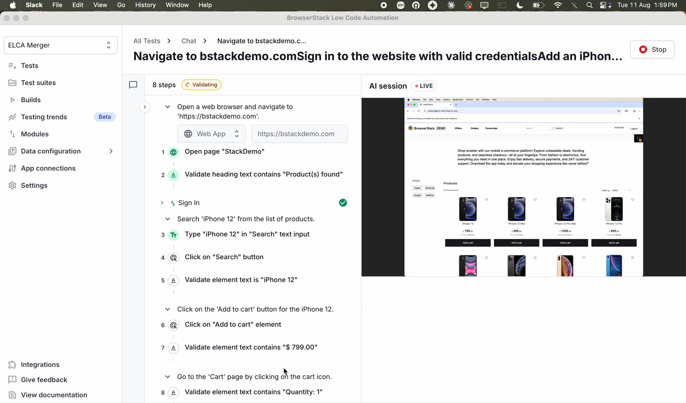
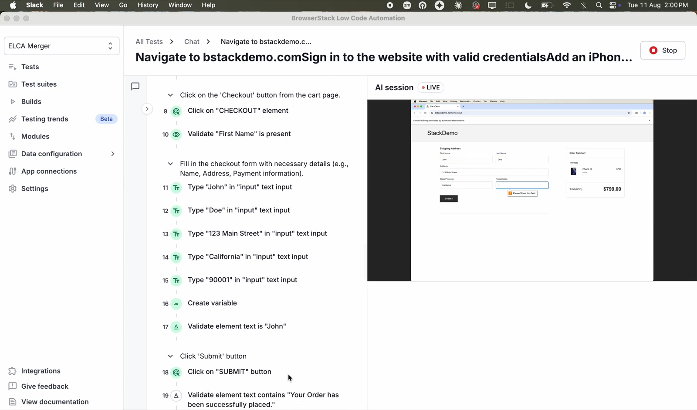

BrowserStack AI（Test Management／LCA） — 機能・導線・画面
確認日：2026年10月27日。比較の見どころ・画面／動画ギャラリー
調査範囲
Test ManagementのAgent群とLow Code Automationを分けて読む。ケース生成はTeam Ultimate、LCAのAgentic testingはPro／Ultimateの期間限定Alphaと公式Docsに記載。全プランの一般機能とはしない。
比較上の位置：要求・作成・実行・保守の直接比較。追加理由：既存の要求・手動ケース・環境・結果の基盤にAgentが入り、追加ツールを買わずにQAを進める代替になるため。
公開Docs・UI例まで。アカウントのAI preferencesを変更せず、MCP・実行・データ提供を行っていない。Alpha／Betaの説明は対象機能単位で保持する。
作業の流れ
PRD・ticket等 → Ask AI → case生成・承認 → maintenance／dedup → LCAへ自動化 → 実行・証拠 → failure analysis／healing → MCP・次のrun
機能の構成
Ask AI、Test Case Generator／Maintenance／Data／Deduplication／Selection、Failure Analysis、Low Code Authoring、MCP。関連基盤はAutomate／App Automate／Percy等。
下表は公開説明・文書の要約。実操作した範囲は画面一覧と調査範囲に限定し、表全体を実機検証済みとはしない。
| 段階 | 画面・機能 | 入力・操作と次の行動 |
|---|---|---|
| 要求 | Case Generator | 文章・PRD・Jira・Confluence・Figma等からケースを生成する説明。 |
| 確認 | Ask AI | 複数Agentの入口を会話にまとめ、変更前に承認を求める。 |
| 維持 | Case Maintenance | 要求変更に合わせ既存ケースを更新し、不足するケースを補う。 |
| 整理 | Data・Deduplication・Selection | 実行データ、重複ケース、次のrunの選択を支える。 |
| 探索 | Explore URL・Instructions | URLと調べる範囲、追加ルールから探索。live session・summaryを確認し、priority付きシナリオからケースを選ぶ。 |
| 自動化 | Low Code Authoring | 手動ケースを実行可能な操作へ変換する。Agentic testingはAlphaの利用条件あり。 |
| 再利用・確認 | Modules・Automation Validation | 生成ケースに既存moduleを挿入し、実ブラウザでstepを検証する公式動画。自社環境での検証ではない。 |
| 実行 | Browser・device | 既存のbrowser・device基盤に接続する。機能・契約を製品ごとに確認する。 |
| 調査・保守 | Failure Analysis・Self healing | log・履歴等から原因を分析し、変わったlocatorに対応する。 |
| 外部入口 | MCP | 開発Agentから生成・分析・修復等へ入る。実行前の承認・権限は別に確認。 |
| 履歴 | History | 以前の生成sessionを再度開く。 |
人の担当と比較上の着眼点
入力する期待・対象・認証・操作権限と、生成計画・修復差分・結果を人が判断する。
調査者の解釈：作成機能だけでなく、要求変更・重複整理・データ・既存の実行結果を扱う継続運用の比較相手。 製品性能の優劣を実証した結論ではない。
動画と見る場面
- 生成ケースへ再利用moduleを追加（23.4秒、official-product-video）。公式の掲載元。
見る場面： 2秒：生成ケース、
2秒：生成ケース、
7秒：moduleを指定、13秒：ケース内の参照、
20秒：変更のreview。 - AI Automation Validation：実ブラウザの操作とstep結果（48.3秒、official-product-video）。公式の掲載元。
見る場面：
3秒：検証の開始、
13秒：途中step、
24秒：失敗したstep、
34秒：再実行、
45秒：stepの結果。